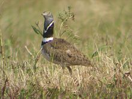
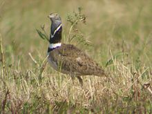

| Little Bustard | |
|---|---|
|  | |
| Male | |
| Conservation status | |
| Binomial name | |
| Tetrax tetrax (Linnaeus, 1758) |
| Little Bustard | |
|---|---|
|  | |
| Male | |
| Conservation status | |
| Binomial name | |
| Tetrax tetrax (Linnaeus, 1758) |
The Little Bustard, Tetrax tetrax, is a large bird in the bustard family, the only member of the genus Tetrax. It breeds in southern Europe and in western and central Asia. Southernmost European birds are mainly resident, but other populations migrate further south in winter. The central European population once breeding in the grassland of Hungary went extinct several decades ago.
This species is declining due to habitat loss throughout its range. It used to breed more widely, for example ranging north to Poland occasionally (Tomek & Bocheński 2005). It is only a very rare vagrant to Great Britain despite breeding in France.
Although the smallest Palearctic bustard, Little Bustard is still pheasant-sized at 45 cm long with a 90 cm wingspan. In flight, the long wings are extensively white. The breeding male is brown above and white below, with a grey head and a black neck bordered above and below by white.
The female and non-breeding male lack the dramatic neck pattern, and the female is marked darker below than the male. Immature bustards resemble females. Both sexes are usually silent, although the male has a distinctive "raspberry-blowing" call "prrt".
This species is omnivorous, taking seeds, insects, rodents and reptiles. Like other bustards, the male Little Bustard has a flamboyant display with foot stamping and leaping in the air. Females lay 3 to 5 eggs on the ground.
This bird's habitat is open grassland and undisturbed cultivation, with plants tall enough for cover. It has a stately slow walk, and tends to run when disturbed rather than fly. It is gregarious, especially in winter.

{kind=link}